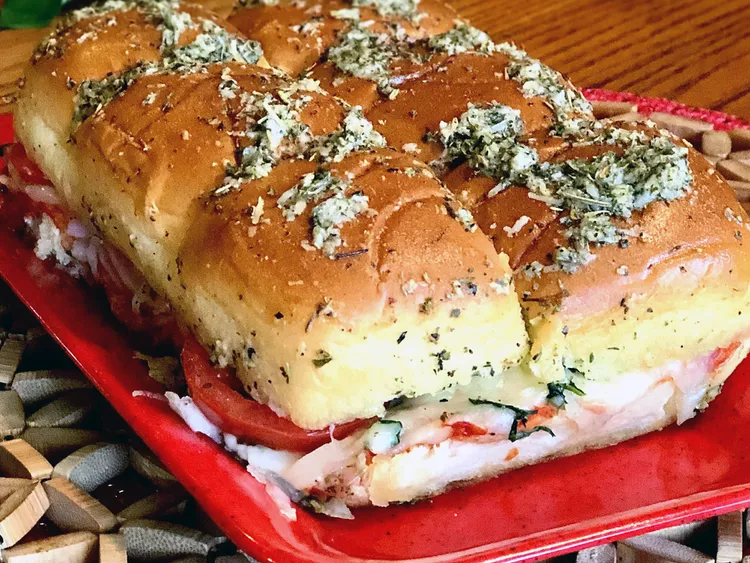

Vegetarian Sliders
Description
These sliders are a quick and easy vegetarian appetizer or main dish.
They are filled with gooey mozzarella cheese, tomatoes, basil, and garlic.

Ingredients
- 1 (12 count) package Hawaiian bread rolls
- ½ cup marinara sauce
- 8 ounces grated mozzarella cheese
- 3 Roma tomatoes, sliced
- ¼ cup chopped fresh basil
- ¼ cup butter, melted
- 2 tablespoons grated Parmesan cheese
- 2 cloves roasted garlic, finely minced
- 2 teaspoons Italian seasoning
Directions
Step 1
Preheat the oven to 375 degrees F (190 degrees C). Grease a 9x13-inch pan.
Step 2
Cut the rolls in half. Set the bottom halves into the bottom of the prepared pan
and spread with marinara sauce. Place a layer of mozzarella cheese over the
marinara and add a layer of tomatoes over the cheese. Spread basil over the
tomatoes and add the top halves of the rolls.
Step 3
Combine melted butter, Parmesan cheese, garlic, and Italian seasoning in a
bowl; stir to combine. Brush over the tops of the sliders.
Step 4
Bake in the preheated oven until the insides are gooey and the tops are golden
brown, 10 to 15 minutes.